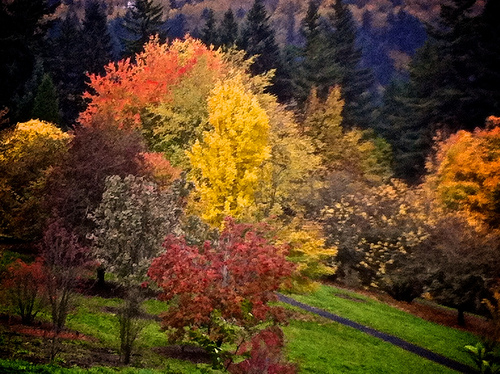
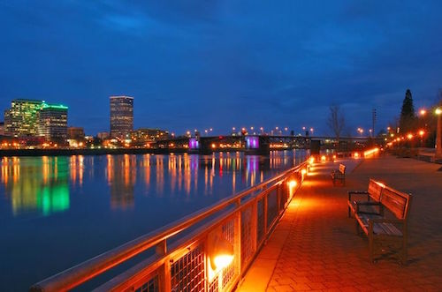
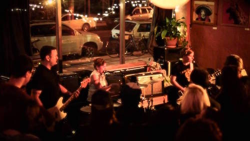

Hoyt Arboretum

Nestled in the hills of Southwest Portland, the Hoyt Arboretum offers a world-class array of trees in a one-of-a-kind setting. Explore groves of redwoods, magnolias and much more along a dozen miles of well-groomed trails. The arboretum is just two miles from downtown and is easily accessible by car or public transportation.
Eastbank Esplanade

This bicycling and pedestrian path along the Willamette River provides breathtaking views in any season. See the lights of downtown, ships on the river and the city's famous bridges while strolling or cycling down the 1.5-mile path. For further exploration, the Esplanade connects to the Steel Bridge RiverWalk at the north end and the Springwater Corridor trail to the south.
Turn! Turn! Turn!

After a full day of exploring, you might be ready for a drink, and Turn! Turn! Turn! is guaranteed to provide the best in liquid refreshment. In addition to a full bar and delicious food options, you can shop for vintage records, clothing and zines. Turn! Turn! Turn! also plays host to some of the finest live music in town, with touring and local bands performing nearly every night of the week.